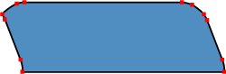

Карты-изображения
Карты-изображения позволяют привязывать ссылки к разным областям одного изображения. Реализуется в двух различных вариантах — серверном и клиентском. В случае применения серверного варианта браузер посылает запрос на сервер для получения адреса выбранной ссылки и ждет ответа с требуемой информацией. Такой подход требует дополнительного времени на ожидание результата и отдельные файлы для каждой карты-изображения.
В клиентском варианте карта располагается в том же HTML-документе, что и ссылка на изображение.
Клиентский вариант карты-изображения
Для указания того, что изображение является картой, используется
атрибут usemap тега <img>.
В качестве значения указывается ссылка на описание конфигурации
карты.

Рис. 1. Закладки являются ссылками, созданными с помощью карты
Чтобы сделать ссылки на закладки, показанные на рис. 1, следует использовать следующий код (пример 1).
Пример 1. Использование карты-изображения
<!DOCTYPE html>
<html lang="ru">
<head>
<meta charset="UTF-8">
<title>Карта-изображение</title>
</head>
<body>
<p><img src="images/map.gif" width="411" height="46" usemap="#map" alt="Навигация"></p>
<map name="map">
<area shape="poly" alt="Закладка 2"
coords="210,27,203,9,202,6,197,2,192,1,120,1,115,2,110,6,112,9,119,27,119,32,211,32,210,27"
href="2.html">
<area shape="poly" alt="Закладка 3"
coords="302,27,295,9,293,6,289,2,283,1,212,1,206,2,202,6,203,9,210,27,211,32,284,32,303,32,302,27"
href="3.html">
<area shape="poly" alt="Закладка 4"
coords="302,27,303,32,394,32,393,27,386,9,382,3,375,1,303,1,298,2,293,6,295,9,302,27"
href="4.html">
</map>
</body>
</html>Для указания браузеру, что изображение является картой, применяется атрибут usemap. Он является ссылкой
на описание конфигурации карты, которая задается тегом <map>.
Значение атрибута name данного тега
должно соответствовать имени в usemap.
Для задания активой области, являющейся ссылкой на HTML-документ,
используется тег <area>.
Атрибуты тега AREA
shape
Определяет форму активной области. Форма может быть в виде окружности (circle),
прямоугольника (rect), полигона (poly).
alt
Добавляет альтернативный текст для каждой области. Служит лишь комментарием для ссылки, поскольку на экран не выводится.
coords
Задает координаты активной области. Координаты отсчитываются в пикселах от левого верхнего угла изображения, которому соответствует значение 0,0. Первое число является координатой по горизонтали, второе — по вертикали. Список координат зависит от формы области.
Для окружности задаются три числа — координаты центра круга и радиус.
<area shape="circle" coords="230,340, 100" href="circle.html">Для прямоугольника — координаты левого верхнего и правого нижнего угла.
<area shape="rect" coords="24,18, 210,56" href="rect.html">Для полигона задаются координаты его вершин (рис. 2).

Рис. 2. Координатные точки для полигона
href
Определяет адрес ссылки для области. Правила записи такие же, как и для тега
<a>.
Карты-изображения позволяют создавать ссылки на разные области одного изображения. Использование этого подхода наглядней, чем обычные текстовые ссылки и позволяет применять всего один графический файл для организации ссылок. Однако не нужно считать, что карты-изображения следует включать везде, где требуются графические ссылки. Прежде всего, следует оценить все доводы за и против, а также просмотреть альтернативные варианты.
Преимущества карт-изображений
1. Карты позволяют задать любую форму области ссылки. Учитывая, что изображения по своей природе прямоугольны, сделать графическую ссылку сложной формы, например для указания географического района, без карт-изображений не представляется возможным. Как правило, в географической тематике карты-изображения и применяются наиболее часто.
2. С одним файлом удобней работать — не приходится заботиться о состыковке отдельных фрагментов и рисунок легко можно поместить в нужное место.
Недостатки
1. Нельзя установить всплывающую подсказку и альтернативный текст для отдельных областей. Альтернативный текст позволяет получить текстовую информацию о рисунке при отключенной в браузере загрузке изображений. Поскольку загрузка изображений происходит после получения браузером информации о нем, то замещающий рисунок текст появляется раньше. А уже по мере загрузки текст будет сменяться изображением. Для карт-изображений эта особенность является актуальной, ведь если отключить просмотр изображений, что делают многие пользователи, то в итоге увидим лишь один пустой прямоугольник.
2. При сложной форме области ссылки увеличивается объем кода HTML. Контур аппроксимируется набором прямых отрезков, для каждой точки такого отрезка следует задать две координаты, а общее количество таких точек может быть достаточно велико. Справедливости ради, следует отметить, что сложные формы являются частным случаем и применяются достаточно редко.
3. С картами-изображениями нельзя сделать разные эффекты, которые доступны при разрезании одного рисунка на фрагменты: эффект перекатывания, частичная анимация, индивидуальная оптимизация картинок для их быстрой загрузки.
Юзабилити
С позиции удобства пользователей, карты-изображения имеют только одно преимущество — ссылки разнообразной формы. Это добавляет наглядность в представлении информации — мы не ограничены прямоугольной формой ссылки и можем использовать ссылки сложной конфигурации для своих целей. Во всех остальных отношениях от них проку нет — обычные текстовые ссылки более информативны и им не страшно отключение показа картинок в браузере. Тот факт, что одно изображение загружается быстрее, чем та же картинка, но порезанная на фрагменты и сохраненная в виде набора графических файлов, легко обходится. Каждый из таких конечных файлов можно уменьшить, используя индивидуальные настройки оптимизации. В итоге, общий объем всех фрагментов будет занимать меньше места, чем одно изображение. Не стоит сбрасывать со счетов и психологический фактор — человеку кажется, что набор маленьких картинок загружается быстрее, чем одна большая.
Основной недочет карт — нет четко выделенных границ ссылок. Поэтому эти границы приходится выделять разными средствами уже на изображении. Если рисунок не загрузился по каким-либо причинам, то разобраться в наборе ссылок становится весьма проблематичным.
Альтернативный вариант
Не всегда есть острая необходимость использовать карты-изображения, поэтому следует обратить внимание на то, что существуют и другие возможные варианты выполнения поставленной задачи.
Разрезание изображений
Это одно из популярных средств в дизайне. Одно изображение в этом случае разрезается с помощью специальных программ на фрагменты, которые окончательно сводятся вместе, создавая иллюзию цельной картинки. Хотя области разрезания могут быть только прямоугольные, в большинстве случаев этого вполне достаточно для создания ссылок. Для каждого фрагмента можно выбрать наиболее подходящий графический формат, в котором он будет сохранен, параметры оптимизации, добавить альтернативный текст. Тогда даже при отключенном показе картинок, будут хорошо видны границы областей и замещающий изображение текст.
Резюме
Как выяснилось, причина использовать карты-изображения только одна — сложная форма ссылок, продиктованная задачами дизайна. Типичное применение — регионы географической карты, которые служат ссылками. Во всех остальных случаях можно обойтись и текстовыми ссылками, а при необходимости создания графической навигации, одно изображение для удобства можно разрезать на фрагменты. Такой подход создаст больше удобства пользователям, особенно тем, которые в силу разных причин отключают показ изображений в браузере. О них тоже нужно помнить.